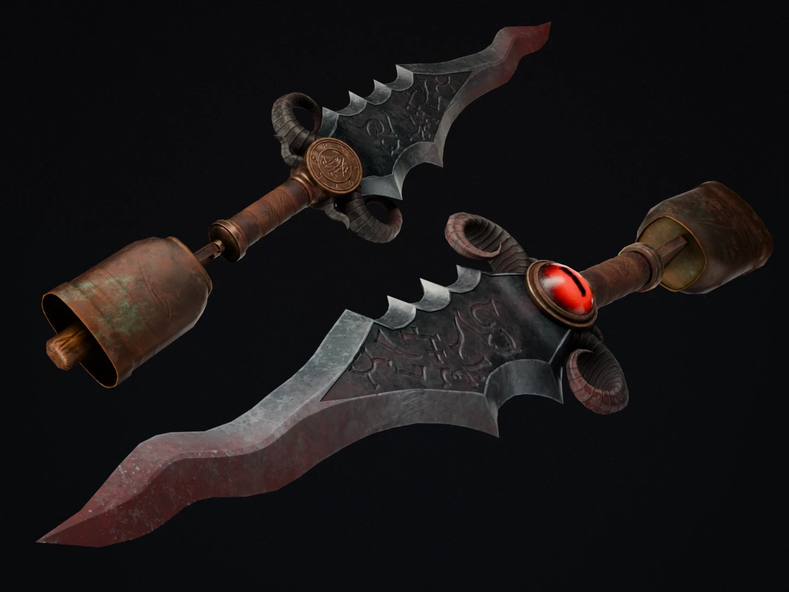
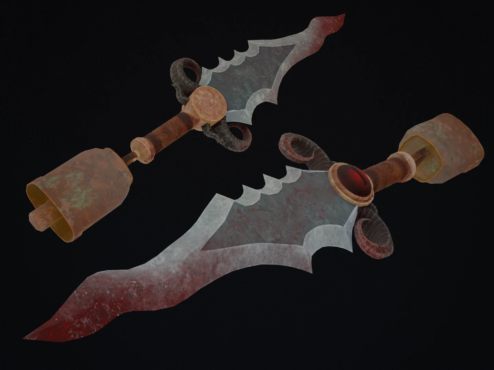
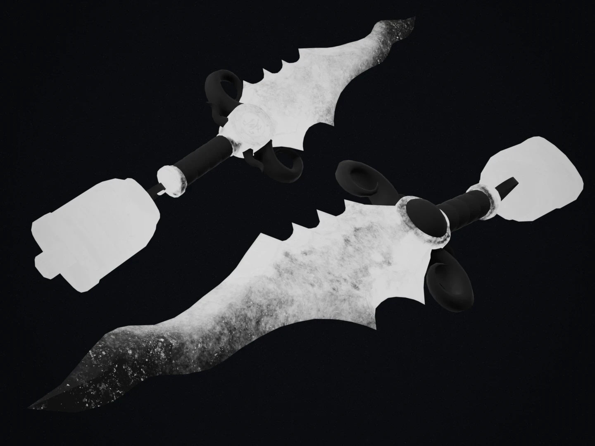
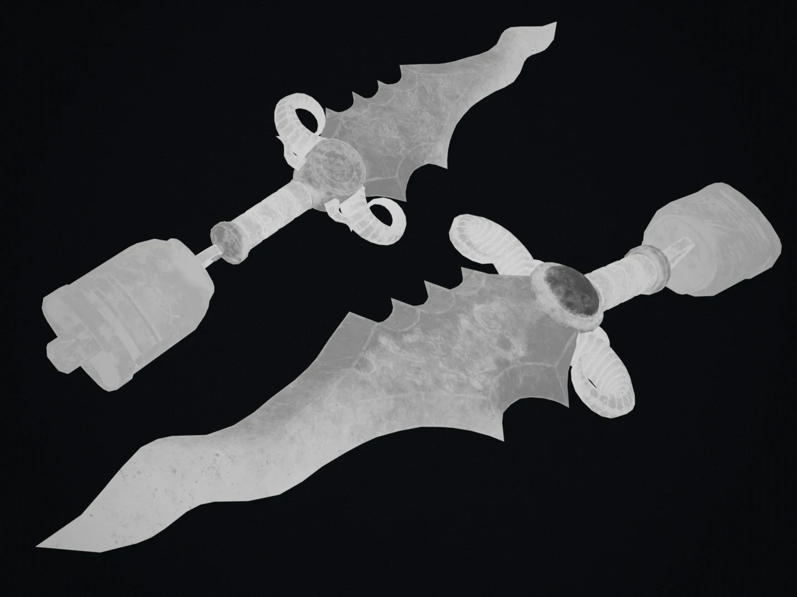
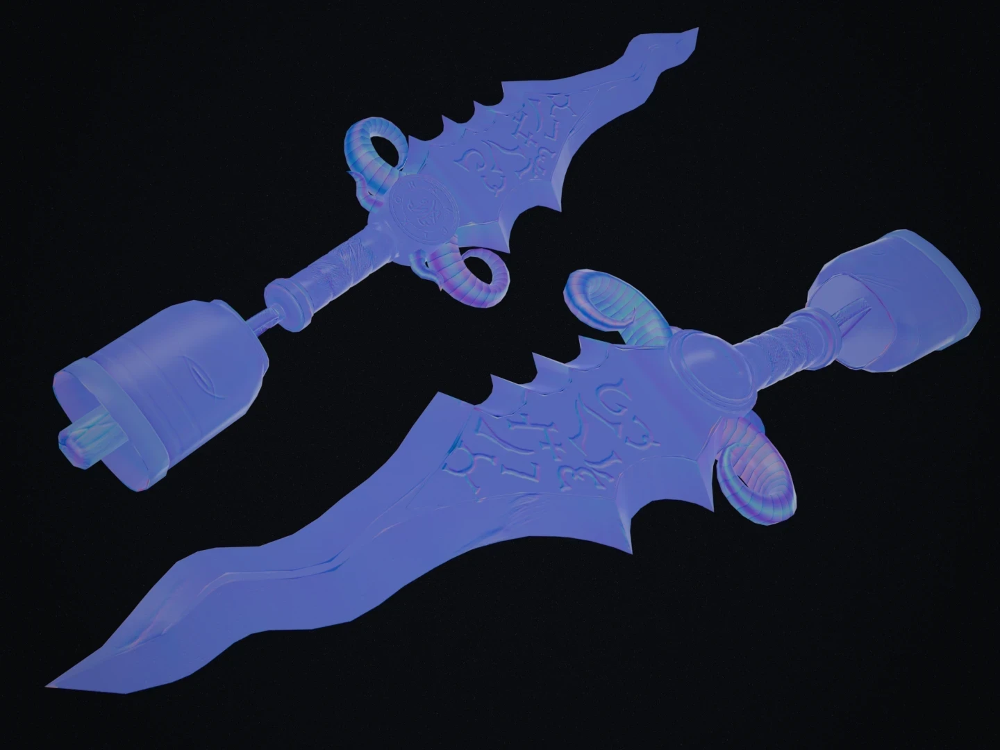
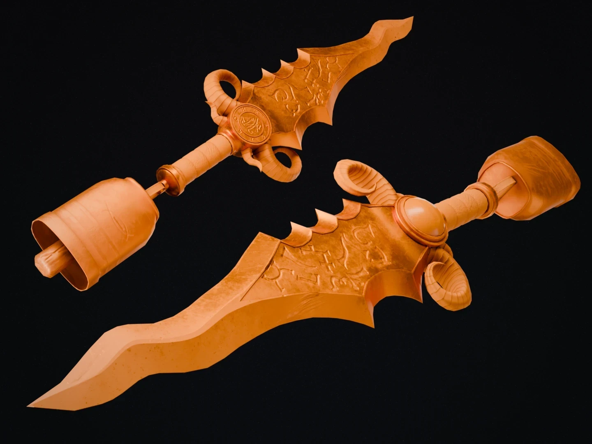
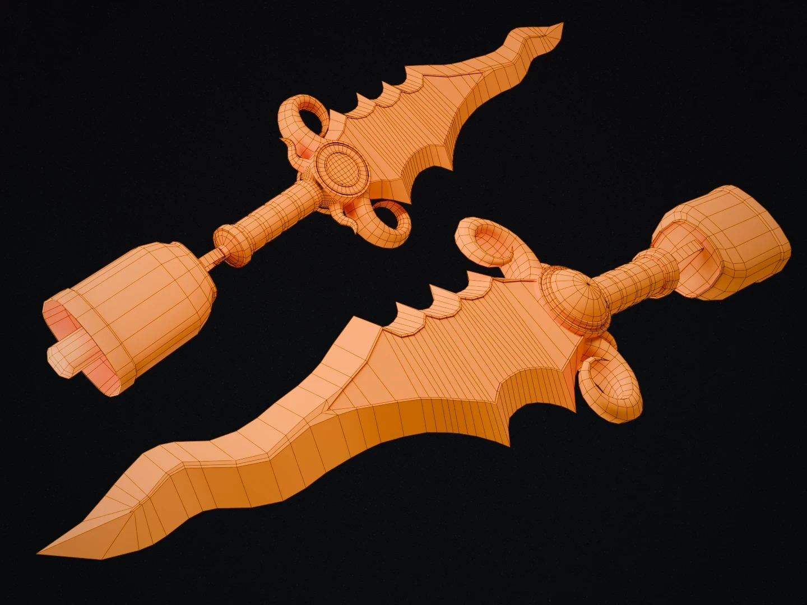

Prop 01
Sacrificial Dagger
A detailed stylised dagger whose design conveys its ritual purpose. Key details like the bell and the eye hint at the goat-like deity behind the cult. Engraved glyphs on the blade are baked into the normal map.
- 5,896 tris
- Blender
- Substance 3D Painter
- Krita